Scavanger Hunt
This scavenger hunt that I participated in was for the purpose of exploring campus and finding all the different design priorities that have been created. I looked for ones that served their specific roles as well as ones that I believe needed improvements. There are 12 different design priorities that I needed to find, which I will show, followed by a picture of that priority and the reasoning behind it.
1. Evidence of design for navigation without one or more of the 5 senses
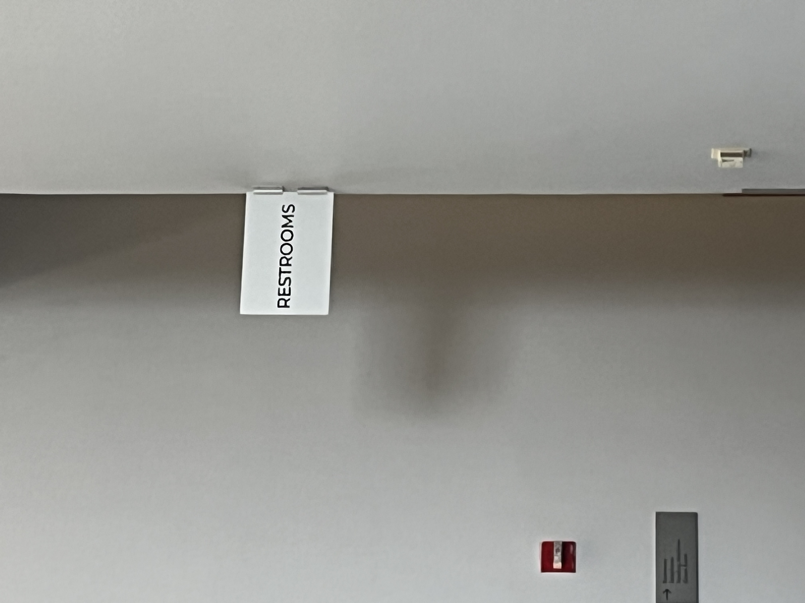
This image is of a sign that reads restroom. This allows for people who may be deaf and cannot ask for directions to see where the bathroom is.
2. Evidence of design for forms of assistance, broadly defined
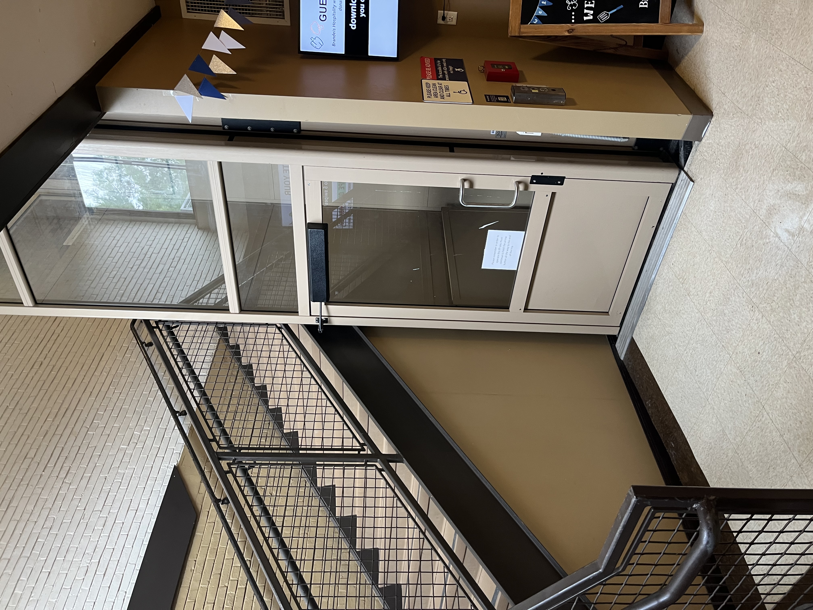
This is an elevator for people who need a wheelchair, allowing them to access the dining hall without using the stairs
3. Evidence of design for aging, broadly defined
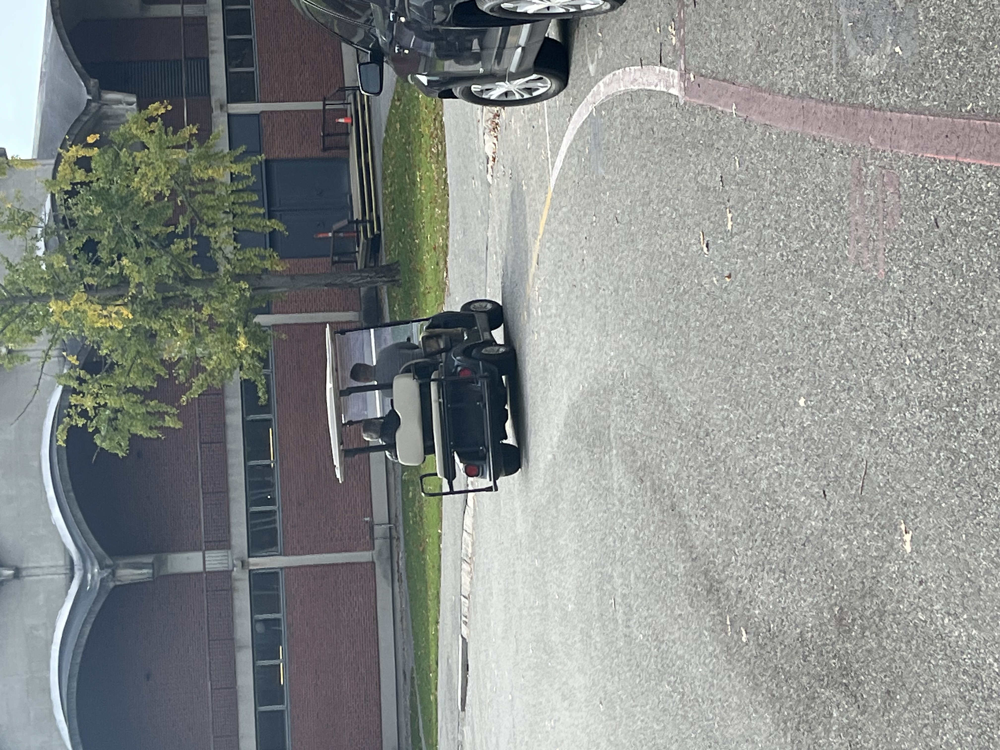
This is a photo of an older Brandeis alumnus being transported around campus in a golf cart, which is provided for people who, at their older age, struggle with walking far or long distances or who tend to move at a slower pace.
4. Evidence of design for young children (no parks or playgrounds)
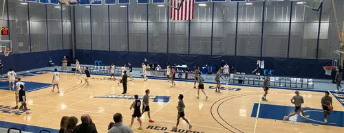
This is the Brandeis basketball court, where all students are allowed to play at
5. Evidence of design for wheeled mobile gear (chairs, bikes, strollers, etc.) Designs against access
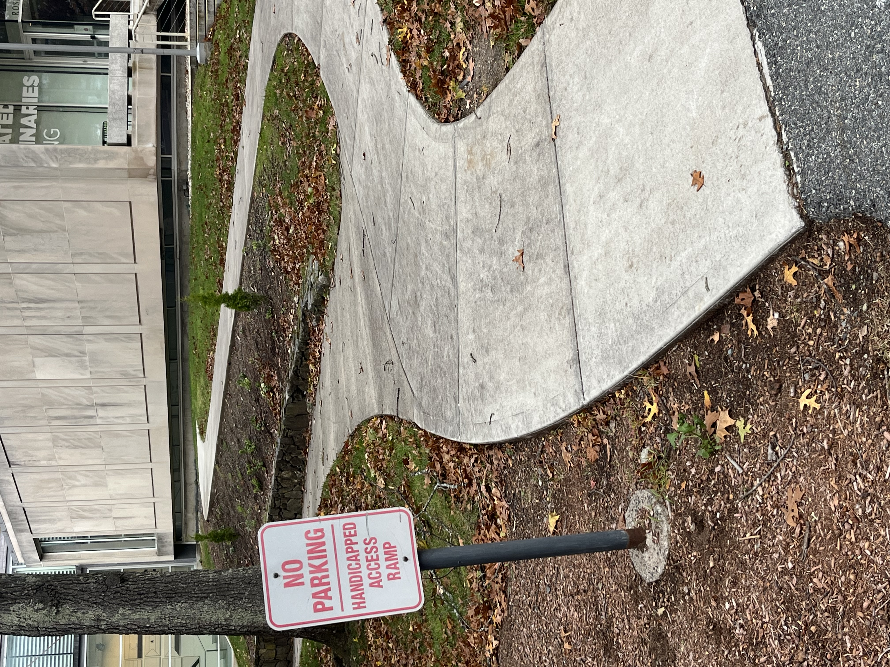
This is a pathway that was created with the intention of allowing people who are on mobility gear, like scooters or wheelchairs, to access the art gallery without having to walk over the dirt and rocks.
6. Evidence of design with physical barriers
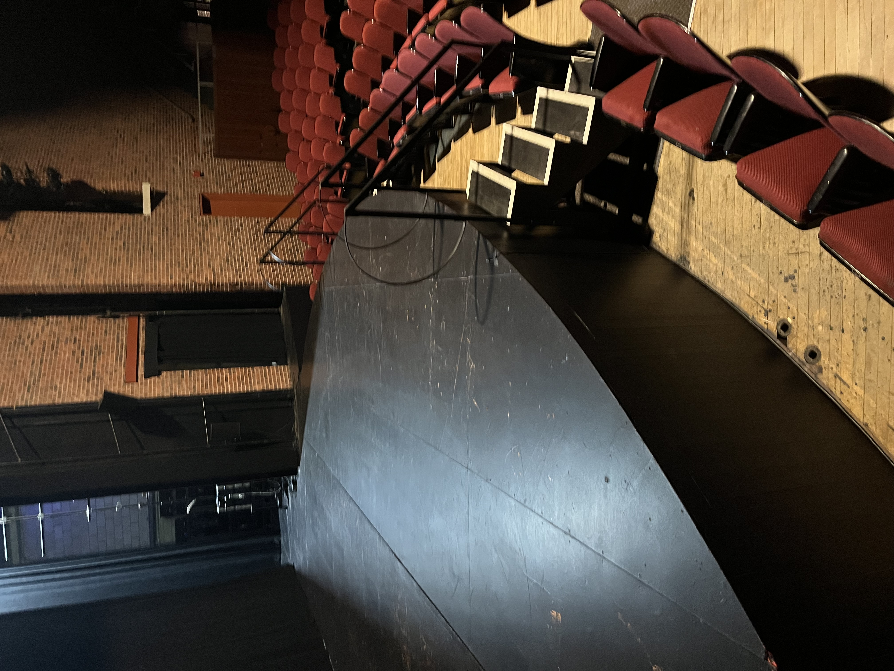
This is a photo of the stage in the theater, where the only way to access the stage is to go up the large steps or jump up, meaning people with disability have no way to access the stage
7. Evidence of design with a lack of information
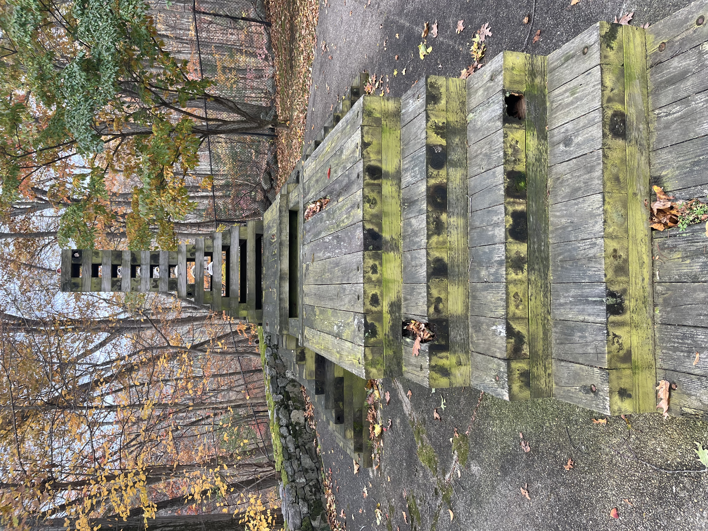
This is a sculpture outside the art museum. It has no signs to indicate what it is, leaving people wondering if it is just something to look at or if it is something you climb because it does have stairs leading up to a wooden base.
8. Evidence of design with an absence of help: Design priorities in the built environment
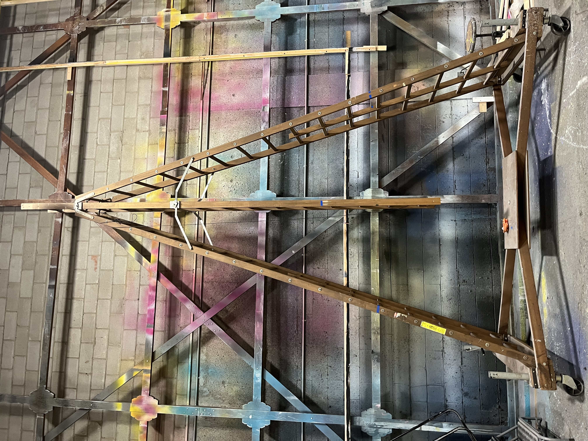
This is a two-sided ladder. Designed to allow for multiple people to access a higher point and work on it at the same time. But with its weaker frame, if two people were to work on this with no one on the ground keeping it stable, it would definitely move out of place or collapse, endangering the users
9. Evidence of design for historical specificity
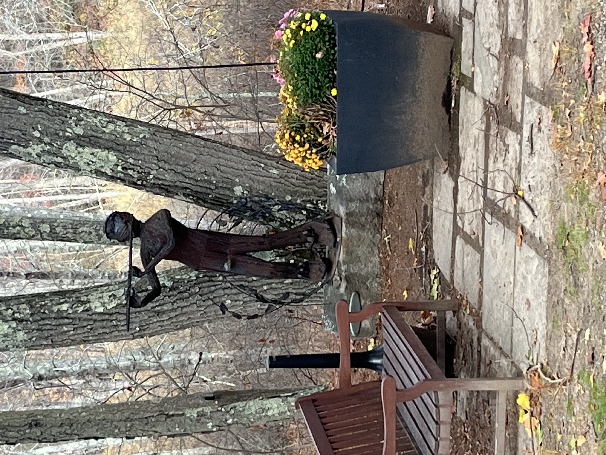
This is a statue outside the International Business School building. Despite having no plaque or title anywhere on or near it. One can assume it was either a gift from a Brandeis alum or a creation of a student in the art studio; either way, it is a part of Brandeis history forever.
10. Evidence of design for environmental sustainability
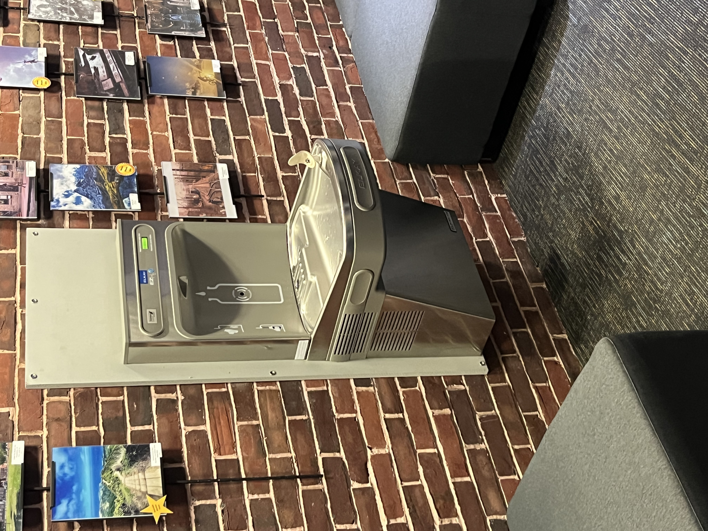
This is a photo of your everyday water fountain, whose purpose is to serve clean filtered water as well as collect any waste that may have missed your mouth or cup and will be run through the filter again to be used again.
11. Evidence of design for health and well-being
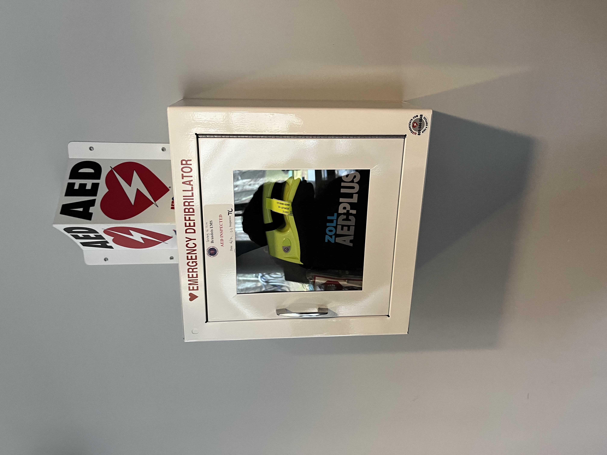
This is an emergency AED kit, located right outside Sherman dining hall, meant for people who may randomly experience a heart attack and need a shock restart to help save their life.
12. Evidence of design for space optimization
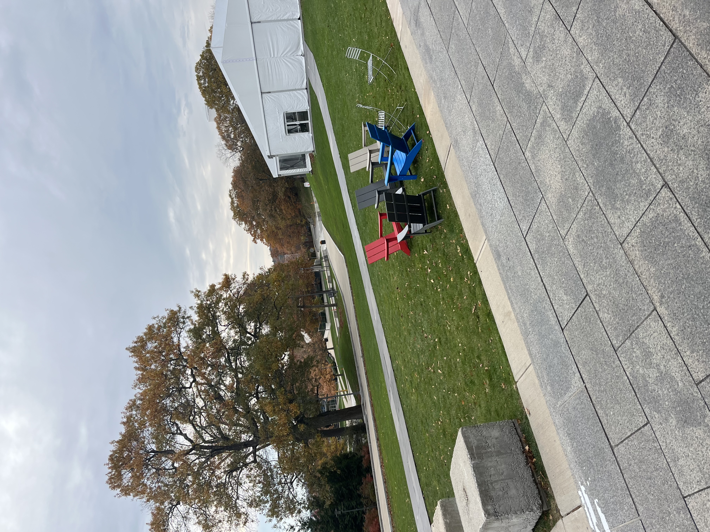
This outdoor space, which is located outside the SCC, is a great example of space optimization because instead of placing a large building next to another one, they created a green space, allowing the campus to look more aesthetically pleasing and providing a place for students to hang out when the weather is warmer.